Os pulmões são os principais órgãos da respiração.
Eles estão localizados no peito, em ambos os lados do mediastino.
A função dos pulmões é oxigenar o sangue.
Eles conseguem isso trazendo o ar inspirado para um contato próximo com o sangue pobre em oxigênio nos capilares pulmonares.
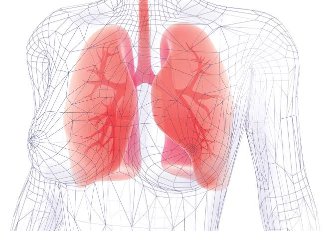
Os pulmões estão em ambos os lados do mediastino, dentro da cavidade torácica.
Cada pulmão é cercado por uma cavidade pleural, formada pela pleura visceral e parietal .
Eles são suspensos do mediastino pela raiz do pulmão – uma coleção de estruturas que entram e saem dos pulmões.
As superfícies mediais de ambos os pulmões estão próximas de várias estruturas mediastinais:
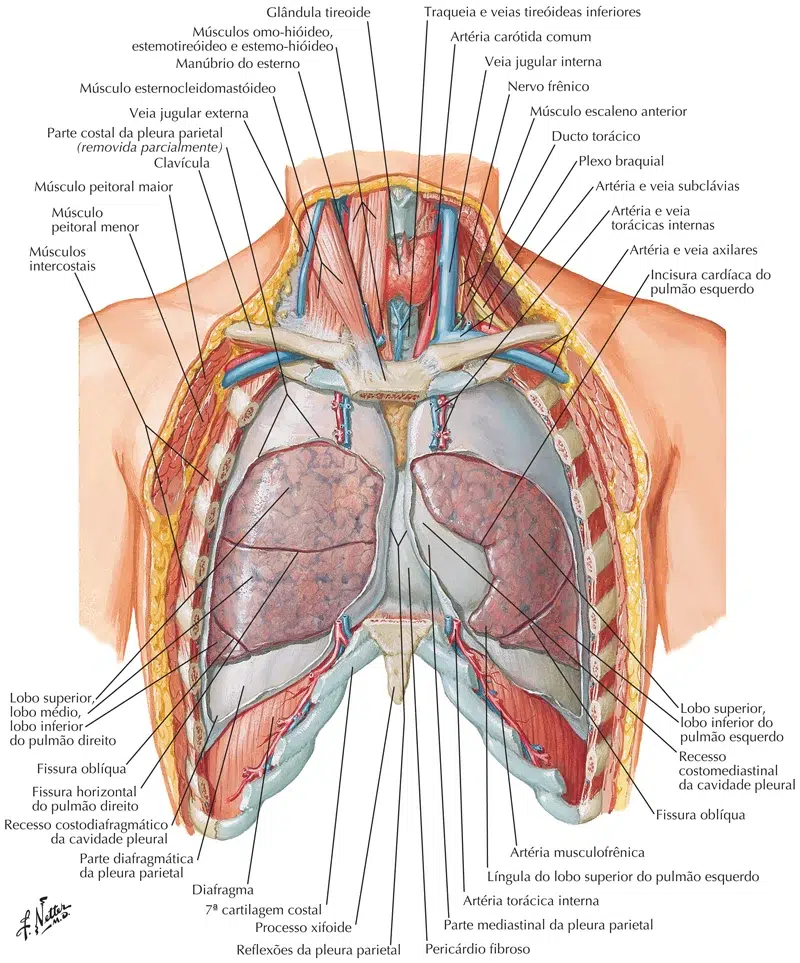
Os pulmões são aproximadamente em forma de cone, com ápice, base, três superfícies e três bordas.
O pulmão esquerdo é um pouco menor que o direito – isso ocorre devido à presença do coração.
Cada pulmão consiste em:
Ápice – A extremidade superior sem corte do pulmão. Ele se projeta para cima, acima do nível da 1ª costela e na base do pescoço.
Base – A superfície inferior do pulmão, que fica no m. diafragma.
Lobos (dois – lado esquerdo ou três – lado direito) – São separados por fissuras no pulmão.
Superfícies / Faces (três) – Correspondem à área do tórax que elas enfrentam. São denominados costal, mediastinal e diafragmático.
Bordas / Margens (três) – As bordas dos pulmões, denominadas bordas anterior, inferior e posterior.
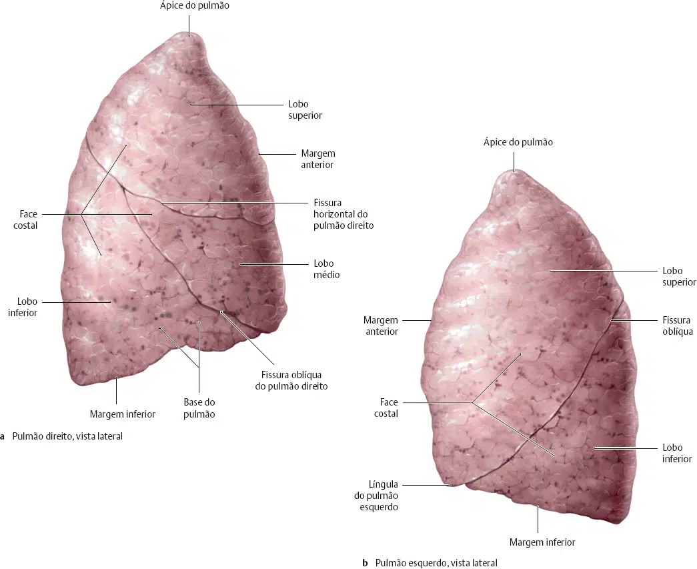
Existem três superfícies pulmonares, cada uma correspondendo a uma área do tórax:
A superfície mediastinal do pulmão está voltada para o aspecto lateral do mediastino médio.
O hilo pulmonar (onde as estruturas entram e saem do pulmão) está localizado nessa superfície.
A base do pulmão é formada pela superfície diafragmática.
Ele repousa sobre a cúpula do diafragma e tem uma forma côncava.
Essa concavidade é mais profunda no pulmão direito, devido à posição mais alta do domo direito sobre o fígado.
A superfície costal é lisa e convexa.
Enfrenta a superfície interna da parede torácica.
Está relacionada à pleura costal, que a separa das costelas e dos músculos intercostais mais internos.
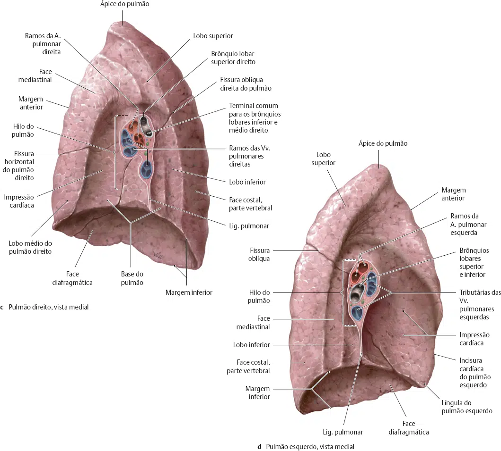
A borda anterior do pulmão é formada pela convergência das superfícies mediastinal e costal.
No pulmão esquerdo, a borda anterior é marcada por um entalhe profundo, criado pelo ápice do coração, conhecido como o entalhe cardíaco .
A borda inferior separa a base do pulmão das superfícies costal e mediastinal.
A borda posterior é lisa e arredondada (em contraste com as bordas anterior e inferior, que são nítidas).
É formada pelas superfícies costal e mediastinal que se encontram posteriormente.
A raiz do pulmão é uma coleção de estruturas que suspendem o pulmão do mediastino.
Cada raiz contém um brônquio, artéria pulmonar, duas veias pulmonares, vasos brônquicos, plexo pulmonar dos nervos e vasos linfáticos.
Todas essas estruturas entram ou saem do pulmão através do hilo – uma área em forma de cunha em sua superfície mediastinal.
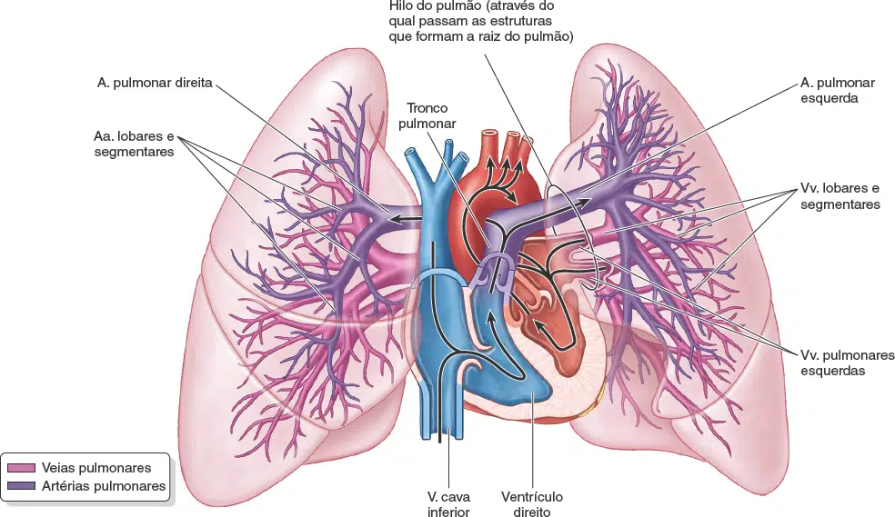
Os pulmões direito e esquerdo não têm uma estrutura lobular idêntica.
O pulmão direito tem três lobos ; superior, médio e inferior.
Os lobos são divididos um do outro por duas fissuras:
Fissura oblíqua – Corre da borda inferior do pulmão em uma direção súpero-posterior, até encontrar a borda posterior do pulmão.
Fissura horizontal – Corre horizontalmente a partir do esterno, no nível da quarta costela, para encontrar a fissura oblíqua.
O pulmão esquerdo contém lobos superiores e inferiores, os quais são separados por uma fissura oblíqua semelhante.
A margem anterior do pulmão esquerdo tem uma incisura cardíaca profunda, uma impressão deixada pelo desvio do ápice do coração para o lado esquerdo.
Essa impressão situa-se principalmente na face ântero-inferior do lobo superior e costuma moldar a parte mais inferior e anterior do lobo superior.
Transformando-a em um processo estreito e linguiforme, a língula, que se estende abaixo da incisura cardíaca e desliza para dentro e para fora do recesso costomediastinal durante a inspiração e a expiração.
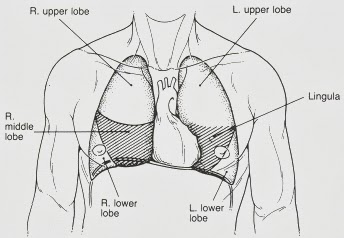
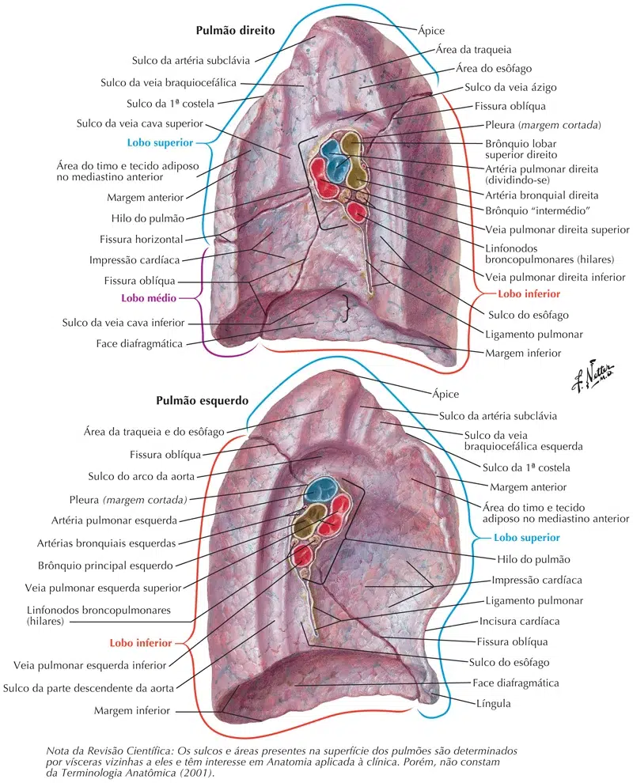
Cada um dos lobos pulmonares está dividido em partes menores chamadas de segmentos broncopulmonares.
Os três lobos do pulmão direito dão origem a 10 (dez) segmentos broncopulmonares, dos quais:
03 estão situados no lobo superior:
Segmento apical (S1), segmento posterior (S2) e segmento anterior (S3).
02 estão situados no lobo médio:
Segmento lateral (S4), segmento medial (S5).
E 05 estão situados no lobo inferior:
Segmento apical ou superior (S6), segmento basilar medial (S7), segmento basilar anterior (S8), segmento basilar lateral (S9), segmento basilar posterior (S10).
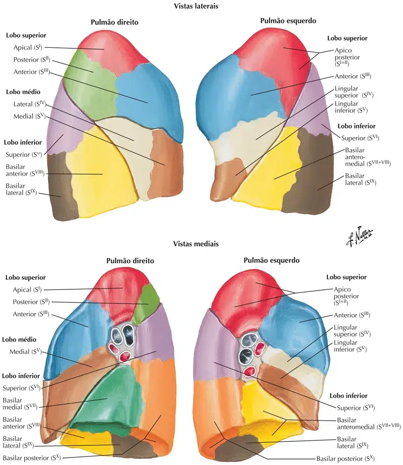
Os dois lobos do pulmão esquerdo dão origem a 8 a 10 (nove) dependendo da associação dos segmentos broncopulmonares.
Destes segmentos:
04 estão localizados no lobo superior:
Segmento ápico-posterior (S1+S2), segmento anterior (S3), segmento lingular superior (S4), segmento lingular inferior (S5).
E 04 estão localizados no lobo inferior:
Segmento apical ou superior (S6), segmento basilar anterior e basilar medial (S7 + S8), segmento basilar lateral (S9), segmento basilar posterior (S10).
A árvore brônquica é uma série de passagens que fornecem ar aos alvéolos dos pulmões.
Começa com a traquéia , que se divide em brônquios esquerdo e direito.
Nota: O brônquio direito tem uma maior incidência de inalação de corpo estranho devido à sua forma mais larga e curso mais vertical.
Cada brônquio entra na raiz do pulmão, passando pelo hilo.
Dentro do pulmão, eles se dividem para formar brônquios lobares – um suprindo cada lobo.
Cada brônquio lobar se divide em vários brônquios segmentares terciários.
Cada brônquio segmentar fornece ar a um segmento pulmonar – essas são as unidades funcionais dos pulmões.
Os brônquios segmentares dão origem a muitos bronquíolos condutores, que acabam levando a bronquíolos terminais.
Cada bronquíolo terminal emite bronquíolos respiratórios, que apresentam sub-bolsos de paredes finas que se estendem de seus lúmens.
Estes são os alvéolos – o local da troca gasosa.
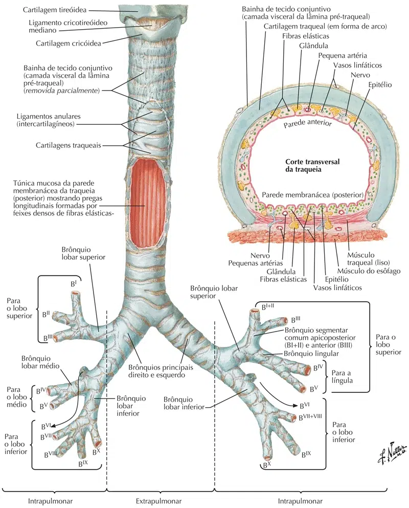
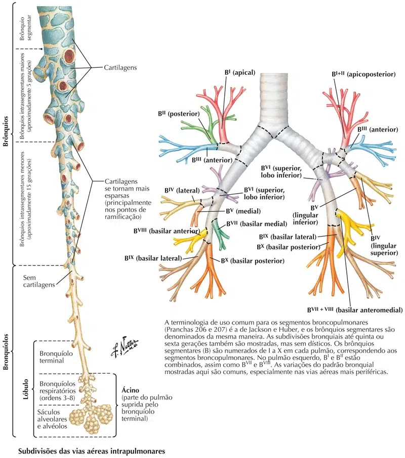
Os pulmões são supridos com sangue desoxigenado pelas artérias pulmonares emparelhadas.
Depois que o sangue recebe oxigenação, ele sai dos pulmões através de quatro veias pulmonares (duas para cada pulmão).
Os brônquios, raízes pulmonares, pleura visceral e tecidos pulmonares de suporte requerem um suprimento sanguíneo extra nutritivo.
Isso é entregue pelas artérias brônquicas / bronquiais, que surgem da aorta descendente.
As veias brônquicas / bronquiais fornecem drenagem venosa.
A veia brônquica / bronquial direita drena para a veia ázigo, enquanto a esquerda drena para a veia hemiázigo acessória.
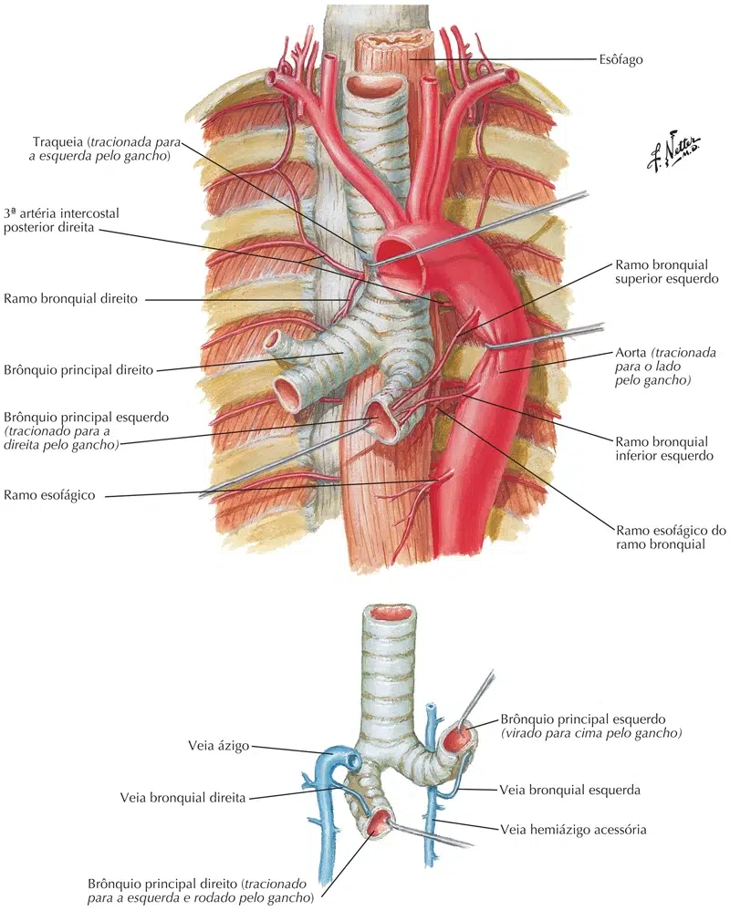
Os nervos dos pulmões são derivados dos plexos pulmonares.
Eles apresentam fibras aferentes simpáticas, parassimpáticas e viscerais:
Aferente parassimpático: Derivado do nervo vago.
Eles estimulam a secreção das glândulas brônquicas, a contração do músculo liso brônquico e a vasodilatação dos vasos pulmonares.
Aferente simpático: Derivado dos troncos simpáticos.
Eles estimulam o relaxamento do músculo liso brônquico e a vasoconstrição dos vasos pulmonares.
Aferente visceral: conduz impulsos de dor ao gânglio sensitivo do nervo vago.
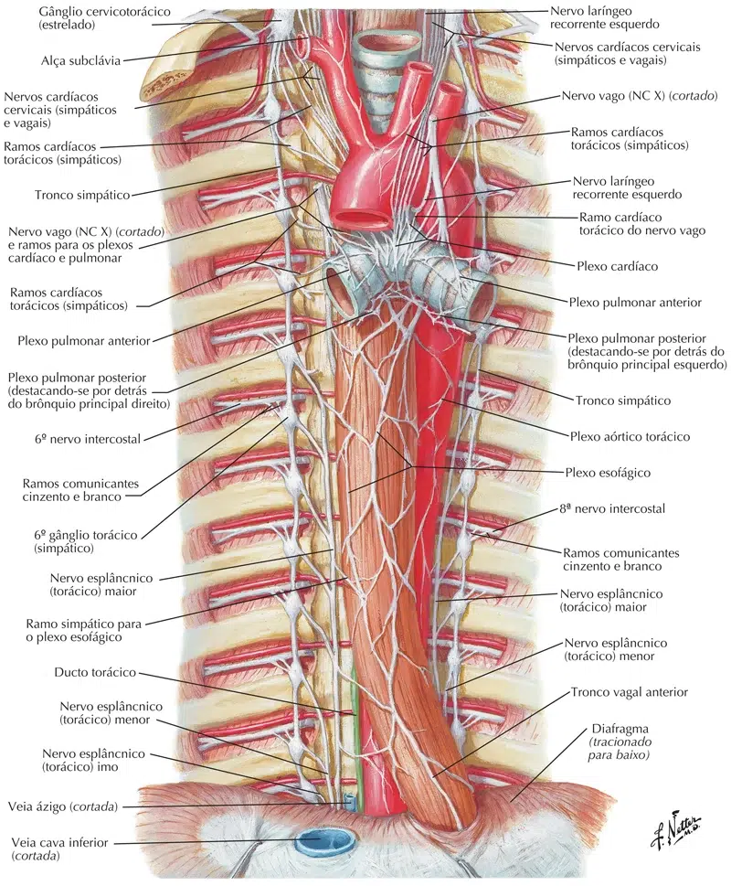